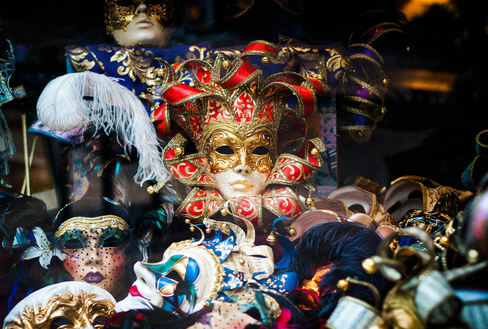

Welcome to a fascinating journey through the history of the Venice Carnival, an event that not only enchants with its visual splendor but also reflects deeply on the traditions and culture of Venice
Benvenuti in un affascinante viaggio attraverso la storia del Carnevale di Venezia, un evento che non solo incanta per il suo splendore visivo ma è anche un profondo riflesso delle tradizioni e della cultura veneziana. Il Carnevale di Venezia, con le sue origini antiche e la vivace atmosfera, rimane uno dei festival più iconici al mondo.

Il Carnevale ha inizio molti secoli fa, con le prime tracce che risalgono addirittura al 1094, quando i veneziani iniziarono a celebrare questo periodo festivo prima della Quaresima. È interessante notare come, fin dai suoi esordi, il Carnevale abbia rappresentato un momento di liberazione sociale, permettendo a tutti, indipendentemente dalla classe sociale, di mescolarsi e festeggiare insieme.
La caratteristica più distintiva del Carnevale di Venezia sono senza dubbio le maschere. Nascoste dietro queste creazioni artigianali, le persone potevano godere di una temporanea anonimità, che spesso si traduceva in scherzi e comportamenti che altrimenti non sarebbero stati tollerati. Con il passare dei secoli, la produzione di maschere e costumi è diventata un'arte raffinata, testimoniata dalla maestria degli artigiani veneziani.
Durante il XVIII secolo, il Carnevale raggiunse il suo apice di splendore, diventando famoso per i suoi intrattenimenti, le sue opere teatrali e la presenza di figure come il celebre Giacomo Casanova. Tuttavia, con la dominazione straniera nel 1797, i festeggiamenti furono vietati e il Carnevale subì un periodo di oblio.
Fortunatamente, nel 1979, grazie agli sforzi combinati di enti locali come il Comune di Venezia e il Teatro La Fenice, il Carnevale è stato splendidamente rivitalizzato, riacquistando il suo antico splendore e attirando visitatori da tutto il mondo.

Per chi desidera vivere l'esperienza del Carnevale di Venezia, ci sono numerosi eventi da non perdere. Tra questi, il famoso "Volo dell'Angelo", che vede una persona calarsi in volo dal campanile di San Marco, e la "Festa delle Marie", che celebra la bellezza e l'eleganza delle giovani veneziane in costume tradizionale.
Se stai cercando un'esperienza autentica e immersiva nella lingua e cultura italiana, considera di partecipare a uno dei tanti corsi di italiano offerti durante il Carnevale. È un'occasione unica per migliorare il tuo italiano mentre vivi direttamente la magia di uno degli eventi più spettacolari d'Italia.
il Carnevale di Venezia non è solo una festa di maschere e colori; è un tuffo nella storia e nella cultura di una delle città più affascinanti d'Italia.
fonte: Qual è la storia del Carnevale di Venezia?
Parole Chiave
| Carnevale | Una festa tradizionale con maschere e costumi, che si celebra prima della Quaresima. |
| Maschere | Oggetti che si indossano sul viso per nascondere l'identità o per divertirsi. |
| Artigiani | Persone che fanno oggetti a mano usando tecniche tradizionali. |
| Venezia | Una città in Italia famosa per i suoi canali e ponti. |
| Quaresima | Un periodo di quaranta giorni prima di Pasqua in cui i cristiani si preparano con preghiera e digiuno. |
| Costumi | Abiti speciali che si indossano durante le feste per sembrare qualcun altro. |
| Anonimità | La condizione di essere sconosciuto o non riconosciuto. |
| Teatro | Un luogo dove gli attori recitano storie davanti a un pubblico. |
| Commedia dell'Arte | Un tipo di teatro italiano con personaggi fissi e parti improvvisate. |
| Libertini | Persone che vivono senza seguire le regole sociali usuali, spesso in modo scandaloso. |
| Volo dell'Angelo | Un evento del Carnevale di Venezia dove una persona scende volando dal campanile di San Marco. |
| Festa delle Marie | Una celebrazione durante il Carnevale di Venezia che ricorda un evento storico. |
| Tradizioni | Usanze o attività che vengono ripetute da molto tempo e che sono tipiche di una cultura. |
| Festeggiamenti | Attività di celebrazione e divertimento in occasioni speciali. |
| Intrattenimenti | Modo di divertire le persone con spettacoli o attività durante un evento o una festa. |
Esercizio
Domande
- Che cosa vedono i visitatori al Carnevale di Venezia?
- Perché le persone indossano maschere al Carnevale di Venezia?
- Come è tornato il Carnevale di Venezia nel 1979?
- Che cosa succede durante il "Volo dell'Angelo" a Venezia?
- Chi celebra la "festa delle Marie"?